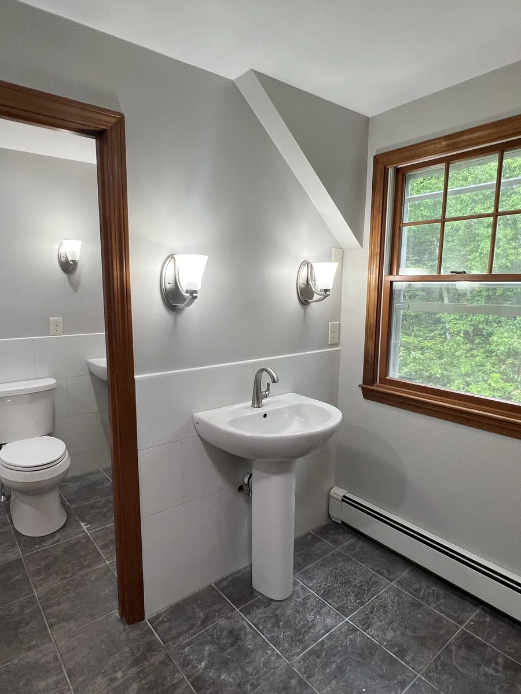
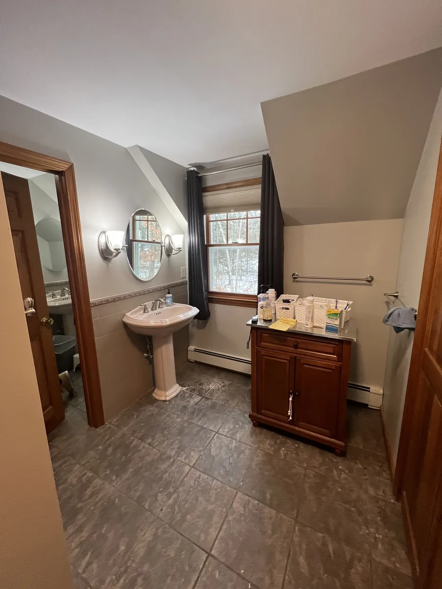

Walkthrough and scope
Luiz reviews the project, listens to the goal and gathers the details needed to build a clear estimate.
Middlesex County and Essex County remodeling
DeFaria Construction helps homeowners and businesses plan kitchen, bathroom, interior and commercial projects with detailed estimates, reliable communication and craftsmanship built around trust.
Clear scope
Material details
Reliable timelines
Project updates
Owner-led care
Local contractor. Visible process.
Most contractors say the same things: quality work, attention to detail and free estimates. DeFaria Construction turns those expectations into a process clients can understand before the first tool comes out.
That means a clear estimate, material clarity, regular feedback during the project and a team that treats the home like a place people still need to live in.
Services
Built around the services DeFaria can show with real project photos, clear scope and high-intent local search demand.

Kitchen Remodeling
DeFaria Construction helps homeowners turn kitchen ideas into a clear scope, visible material decisions and a project path that is easier to trust.

Bathroom Remodeling
From demolition to final fixture, DeFaria Construction organizes bathroom remodeling around visible steps, clean execution and finish details that hold up.

Interior Remodeling
DeFaria Construction helps turn underused rooms into finished, useful spaces with clear planning, practical sequencing and careful finish work.

Commercial Projects
DeFaria Construction supports business owners who need the work done clearly, respectfully and with attention to the operation around the project.

Home Additions
DeFaria Construction helps homeowners expand usable space with planning that respects structure, exterior finish, function and the existing home.

Interior Painting
DeFaria Construction treats interior painting as part of the finish system, with prep, surfaces, trim and color transitions planned around the room.

Exterior Painting
DeFaria Construction helps homeowners improve curb appeal while paying attention to preparation, surfaces, trim and the weather realities around exterior work.

Finish Basements
DeFaria Construction turns unfinished or underused basement areas into cleaner, more usable spaces with planning, framing, drywall and finish work.

Custom and Finish Carpentry
DeFaria Construction brings carpentry detail into remodels with trim, doors, finish transitions and built-in thinking that makes the work feel complete.

Decks and Patios
DeFaria Construction builds and improves decks and patios with attention to structure, access, finish and how the outdoor space will be used.

Insulation, Drywall and Plaster
DeFaria Construction handles insulation, drywall and plaster as the backbone of a clean interior finish, not as a rushed step before paint.

Foundation and Framing
DeFaria Construction supports remodeling and addition projects with framing and structural phases planned around safety, sequencing and the finished result.
The DeFaria way
Before and during the work, clients need more than a price. They need to know what is being used, what happens next and who is paying attention.
Start With an EstimateLuiz reviews the project, listens to the goal and gathers the details needed to build a clear estimate.
The estimate is built to be easy to understand, with materials, objective and project expectations explained clearly.
The team coordinates the work, protects the space, keeps progress visible and avoids the surprise factor clients fear.
At the end of the project, the client is guided to leave a review, add photos and map the next project before the crew leaves.
Real work, not stock images
DeFaria can build trust by showing the complete path: framing, rough-in, materials, progress and the finished room. That is what separates a promise from proof.


Service area
The site should not position Lynn as the primary market. Lynn is tied to residence and company context. The commercial focus is local remodeling demand across Middlesex County, Essex County and nearby North Shore communities.
Reviews and referrals
Each finished project should end with a simple review moment: QR code in hand, photos added by the client and a clear invitation to talk about the next project or referral.
Request an estimate
Use the form or call directly. For faster context, include the service, city and whether you already have photos or measurements.